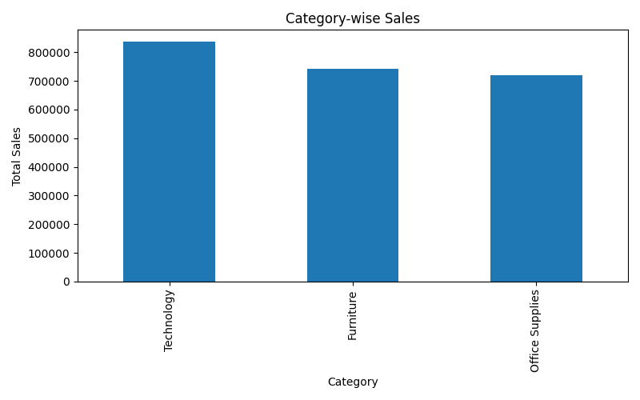

Superstore Business Performance Analysis
An end-to-end business analytics project analyzing retail sales data to uncover
profitability drivers, operational gaps, and growth opportunities.
Executive Summary
This project evaluates transaction-level sales data from a retail superstore
to understand business performance across categories and customer segments.
Key Business Metrics
- Total Sales: ~$2.3 Million
- Total Profit: ~$286 Thousand
- Total Orders: ~5,000
- Average Order Value: ~$458
Key Insights
- Technology is the highest revenue and profit generating category
- Furniture shows high sales but relatively low profit margins
- Consumer segment drives volume, Corporate drives profitability
Data Visualizations
Category-wise Sales

Category-wise Profit

Business Recommendations
- Focus marketing efforts on Technology products
- Optimize discounting strategies in Furniture
- Strengthen Corporate customer retention
Tools & Technologies
- Python
- Pandas
- Matplotlib
- Jupyter Notebook
- GitHub Pages
Jasika Verma
Business Analytics Portfolio
End-to-end Superstore Sales Analysis using Python & Pandas